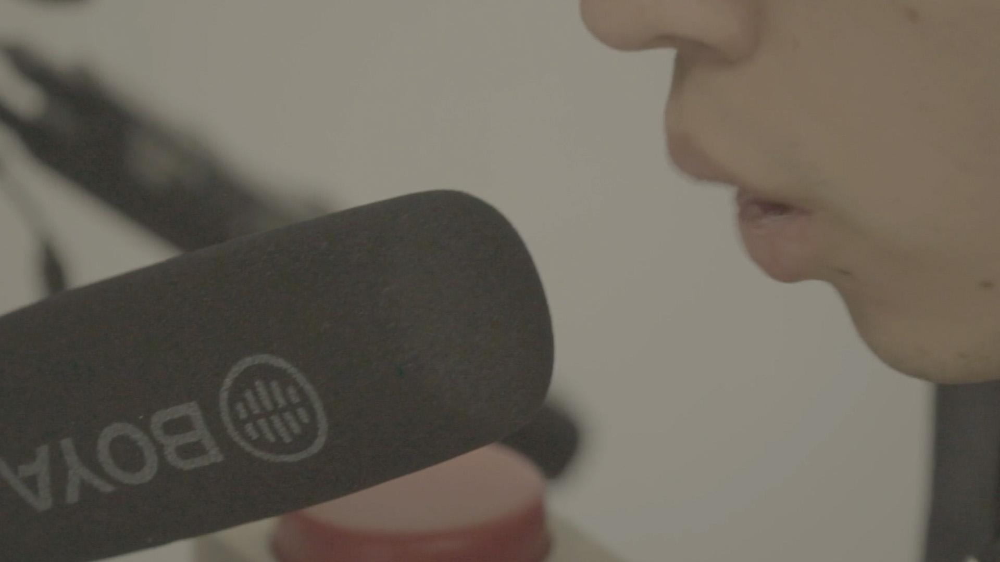
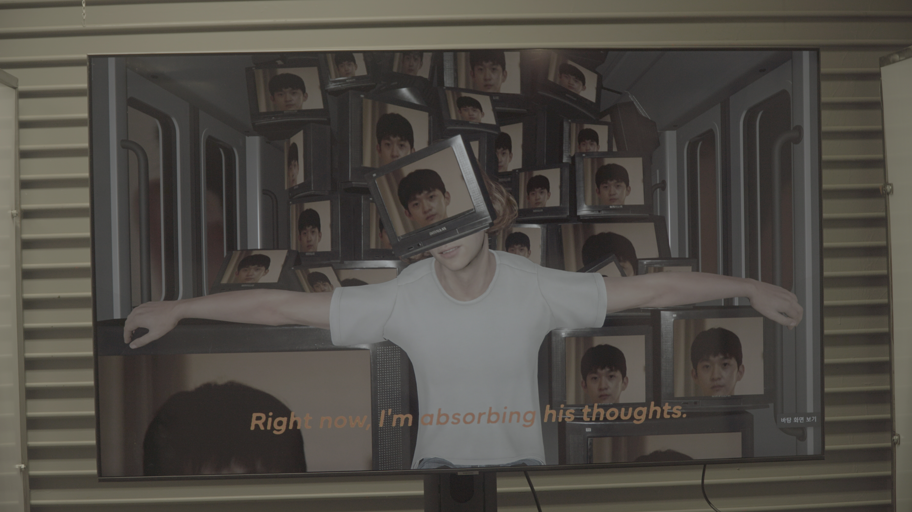
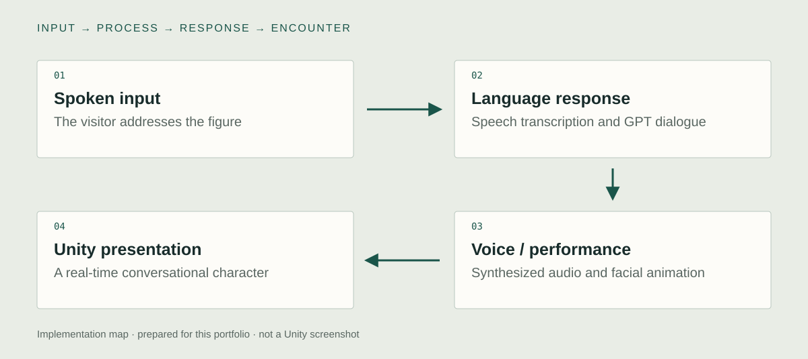

Unity implementation
Character Creator 4 → Unity
I developed the character through Character Creator 4 Headshot, ZBrush refinement, and Maya rigging and UV work, then integrated it into Unity. The character assets and presentation scene provide the real-time foundation for the conversational system.

Spoken GPT conversation
I used a coroutine-based Unity pipeline to sequence spoken input, transcription, GPT replies, ElevenLabs speech synthesis, and playback. These stages turn an incoming question into an audible character response. The generated text and performed audio remain distinct parts of the presented turn.
Facial blendshape playback
I connected the generated reply to facial performance and voice playback. The digital figure speaks through the integrated Unity system, making the exchange visible as a character encounter. The work examines AI-mediated fandom and attachment; no official participation by the real performer is implied.

System & design decisions

- 01Spoken input
The visitor addresses the figure
- 02Language response
Speech transcription and GPT dialogue
- 03Voice / performance
Synthesized audio and facial animation
- 04Unity presentation
A real-time conversational character
Turn speech into performance
Transcription, response generation, voice synthesis, and facial playback are different operations. Their coordination makes the exchange visible as a character's response.
Timing is part of the interface
A generated sentence and its performed audio do not arrive as a single synchronized object. The archive describes Unity sequencing that organizes those handoffs.
Recognizable form and responsive behavior
Recognizable form and responsive behavior contribute different parts of the encounter. The project connects those requirements in a single real-time character.
Concept
What does it feel like when a representation of a performer I admire appears to speak directly to me?
The project begins from my own fandom of JANNABI vocalist Choi Jung-hoon. Familiarity with a real performer's face and voice changes what an artificial response can mean. The character is a constructed representation, while the admiration and expectations brought to the encounter belong to the person addressing it.
Development
Retrospective planning notes, prepared for this portfolio.
Begin with recognition
Use a personally meaningful figure to make familiarity part of the premise.
Prepare the performable character
Move from a visual reference to an animation-ready figure that can articulate new responses.
Assemble one complete turn
Inspect incoming speech, model reply, spoken output, and facial performance as one exchange.
Further research
How does familiarity with a represented person affect the interpretation of conversational responsiveness?
Vary: Familiar versus unfamiliar character presentation.
Hold consistent: Dialogue content, response timing, voice presentation, and interaction duration.
Proposed comparison. No controlled study or measured effect is reported.